160 — Conectividad, tránsito, DNS y service discovery
Parte: 13 — Multi-cloud, híbrido, migración y recuperación
Nivel: experto · Horas estimadas: 4
Laboratorio: network · Estado: EXECUTABLE_CORE
🎯 Propósito
Conectar dos proveedores, empezando por la pregunta que ahorra más trabajo que ninguna otra de esta parte: ¿de verdad tienen que hablarse?. La clase muestra que la mayor parte del coste y de la complejidad viene de conectar cosas que no lo necesitaban; que el cable casi nunca es el problema y el direccionamiento sí; y que extender el descubrimiento interno de un proveedor al otro es un error que se paga durante años. Y termina con lo que ocurre cuando el enlace se cae, que es cuando se descubre si las dos partes eran independientes o solo lo parecían.
📚 Resultados de aprendizaje
Al finalizar podrás:
- Decidir si hace falta conectividad entre proveedores, antes de elegir cómo.
- Elegir el mecanismo de enlace por coste, previsibilidad y número de extremos.
- Planificar el direccionamiento para que no haya solapes, que es irreversible.
- Resolver nombres entre proveedores sin que un resolutor sea un punto único.
- Exponer una frontera estable en vez de extender el descubrimiento interno.
🧩 Conceptos centrales
| Concepto | Comprensión verificable |
|---|---|
nivel de acoplamiento de red |
Cuánto necesitan hablarse las cargas de cada proveedor. En el nivel 1 de la clase 157 es cero, y eso ahorra casi todo. |
plan de direccionamiento |
Reparto de rangos privados entre entornos, regiones y proveedores. Se decide al crear y cambiarlo obliga a renumerar. |
solape de rangos |
Dos redes con el mismo espacio privado. Impide enrutar entre ellas sin traducir, y traducir rompe cosas. |
reenvío condicional |
Mandar las consultas de un dominio concreto al resolutor del otro proveedor. Es lo que hace que los nombres privados funcionen entre nubes. |
punto de frontera |
Extremo estable y documentado por el que se entra a un proveedor, en vez de exponer su descubrimiento interno. |
concentrador de tránsito |
Punto central por el que pasan las conexiones cuando hay más de dos o tres extremos, para evitar la malla de túneles. |
🧠 Modelo mental
Multi-cloud es una decisión de negocio y riesgo; duplicar cada componente entre proveedores rara vez es la forma más confiable o económica de lograrla.
Aplicado a esta clase, separa siempre cuatro planos: intención (qué necesita el usuario), configuración (qué declaramos), estado observado (qué existe de verdad) y evidencia (cómo sabemos que cumple). Confundirlos produce diseños que se ven correctos en un diagrama pero fallan al operar.
🗺️ Flujo de razonamiento

📖 Desarrollo
1. La pregunta previa
Antes de elegir cómo conectar, hay que responder si hace falta:
¿qué carga de A necesita hablar con qué carga de B?
¿con qué frecuencia?
¿es síncrono o puede ser asíncrono? clase 152
¿podría hacerse por una interfaz pública autenticada?
Y el resultado sorprende a menudo:
nivel 1 de la clase 157 —cargas independientes—
no necesita conectividad privada entre proveedores
→ cada carga vive entera en su proveedor
→ y lo que compartan pasa por interfaces públicas autenticadas
o por datos que se copian
Y el coste de conectar, que es lo que se ahorra al no hacerlo:
un plan de direccionamiento común
túneles o enlaces, con su vigilancia y su guardia
resolución de nombres cruzada
reglas de cortafuegos en los dos lados
salida de datos por el tráfico que cruza clase 161
un modo de fallo nuevo: el enlace
y un camino de movimiento lateral entre proveedores clase 133
El último merece detenerse: conectar dos nubes crea un camino que antes no existía, y eso cambia el ejercicio de alcance de la clase 133.
Y las tres formas de necesitar menos conectividad, en orden de preferencia:
1. QUE NO SE HABLEN
la carga completa vive en un lado, con sus datos
2. QUE SE HABLEN POR UNA INTERFAZ PÚBLICA AUTENTICADA
con autenticación mutua y lista de permitidos clases 135, 136
→ es tráfico por internet, cifrado y acotado
→ suficiente para muchísimos casos, y sin infraestructura nueva
3. QUE SE COMUNIQUEN DE FORMA ASÍNCRONA
publicando y consumiendo, en vez de llamando parte 09
→ tolera latencia y cortes
Y solo cuando ninguna sirve —volumen alto, latencia baja, requisito de no salir a internet— se monta conectividad privada.
2. El direccionamiento, que sí es el problema
El enlace físico o lógico rara vez falla. Lo que bloquea los proyectos es esto:
dos redes privadas con el mismo rango
→ no se pueden enrutar entre sí
Y ocurre casi siempre, por tres motivos:
los valores por defecto de los proveedores coinciden
cada equipo eligió su rango cuando creó su red
y una adquisición trae rangos que nadie coordinó
Las tres salidas, con lo que cuesta cada una:
RENUMERAR
la correcta y la cara
→ hay que cambiar direcciones, reglas y todo lo que las tenga escritas
→ y con recursos gestionados, a veces exige recrearlos
TRADUCIR DIRECCIONES ENTRE LAS DOS
funciona y rompe cosas:
lo que lleva direcciones dentro del contenido de los mensajes
los registros: la dirección que se ve no es la real
la depuración, que pasa a requerir una tabla de traducción
y las conexiones iniciadas desde el otro lado, según el caso
PROXY EN LA FRONTERA
solo para servicios concretos
→ no enruta la red: expone puntos concretos
→ y para pocos servicios es la opción más limpia
Y la prevención, que es una decisión de creación y por tanto irreversible —ley 14—:
UN PLAN DE DIRECCIONAMIENTO CENTRAL desde el primer día
un bloque grande reservado para la organización
repartido por proveedor, región y entorno
con reserva para crecimiento y para adquisiciones
y nadie crea una red sin pedir su rango
Y el control que lo hace cumplir es el de la clase 139: una política que impide crear una red con un rango no asignado.
Y una advertencia sobre el tamaño, que se equivoca en las dos direcciones:
rangos demasiado pequeños se agotan y hay que añadir bloques sueltos
rangos demasiado grandes se agota el espacio total de la organización
→ y en entornos con muchas direcciones por instancia —contenedores—
el consumo es mucho mayor de lo que la intuición sugiere
Los mecanismos de enlace, ordenados por coste:
INTERNET CON AUTENTICACIÓN MUTUA
+ nada que montar; cifrado de extremo a extremo
− latencia variable y salida de datos a tarifa normal
TÚNEL CIFRADO SOBRE INTERNET
+ red privada entre los dos
− caudal limitado, y hay que operar los extremos y su redundancia
ENLACE DEDICADO
+ caudal y latencia previsibles, y tarifa de salida menor
− caro, con plazo de contratación de semanas
CONCENTRADOR DE TRÁNSITO
cuando hay más de dos o tres extremos
→ sin él, N extremos exigen del orden de N² túneles
Y la última fila es la que decide la arquitectura de red en cuanto hay más de un puñado de redes: la malla de túneles no escala y nadie la mantiene bien.
3. Nombres y descubrimiento
Los nombres privados de cada proveedor solo resuelven dentro de él. Para que una carga de A resuelva un nombre de B hacen falta dos piezas:
un resolutor de A que sepa reenviar el dominio de B
un extremo en B que acepte esas consultas desde A
y lo mismo en el sentido contrario, si se necesita
Y los tres fallos habituales:
RESOLUCIÓN EN UN SOLO SENTIDO
A resuelve nombres de B y B no resuelve los de A
→ funciona hasta que algo responde con un nombre en vez de una dirección
EL MISMO NOMBRE SIGNIFICA COSAS DISTINTAS
«base.interno» existe en los dos y apunta a bases distintas
→ un error de configuración manda el tráfico al sitio equivocado,
sin ningún error
→ la regla: un nombre significa lo mismo en todas partes,
o se usan sufijos distintos por proveedor
EL RESOLUTOR COMO PUNTO ÚNICO
si el reenvío cae, deja de resolverse todo lo del otro lado
→ dos extremos, en zonas distintas, y comprobación de salud
Y una cuestión que aparece siempre y que conviene decidir de antemano:
los tiempos de vida de los registros deciden la velocidad de conmutación
valores largos menos consultas, conmutación lenta clase 109
valores cortos conmutación rápida, más carga y más coste
→ y algunos clientes ignoran esos valores y cachean por su cuenta
→ por eso la conmutación por nombre nunca es instantánea
El descubrimiento entre proveedores es donde más se complica la gente:
mal extender el descubrimiento interno de un proveedor al otro
→ cada instancia de A conoce cada instancia de B
→ miles de entradas cruzando la frontera, cambiando cada minuto
→ y una malla que hay que operar en los dos lados clase 152
bien exponer un PUNTO DE FRONTERA por servicio
un nombre estable y un extremo con reparto por detrás
→ el otro lado solo conoce ese nombre
→ y dentro de cada proveedor, el descubrimiento sigue siendo interno
Y las ventajas del punto de frontera, que son las mismas que las de un contrato:
la implementación de cada lado cambia sin afectar al otro
se puede limitar, medir y autorizar en un sitio clase 118
y el radio de un fallo queda acotado
Y una consecuencia de latencia que hay que tener presente al diseñar:
latencia entre proveedores, misma zona metropolitana 1-20 ms
entre continentes 30-150 ms
→ una operación conversadora que cruce la frontera 40 veces
añade segundos clase 152
→ la regla: la frontera se cruza UNA VEZ por operación,
y a ser posible de forma asíncrona
4. Cuando el enlace se cae
Un enlace entre proveedores es un componente más, y falla. Lo que hay que decidir de antemano:
¿qué deja de funcionar en A si no ve a B?
¿y en B si no ve a A?
¿alguno de los dos deja de servir a sus usuarios?
Y la respuesta correcta, con el vocabulario de la clase 151:
cada lado debe DEGRADAR, no caer
→ las dependencias que cruzan la frontera deben ser blandas
→ y si alguna es dura, la disponibilidad de un lado depende del enlace
y hay que decirlo clase 126
Y lo que hay que tener para que eso ocurra:
plazos cortos en las llamadas que cruzan clase 130
cortacircuitos por destino remoto
respuesta alternativa: caché, valor por defecto, encolar
y comprobación de que la dependencia es blanda, ensayada clase 131
Y el ensayo correspondiente, que es de los más informativos de esta parte:
cortar el enlace entre proveedores durante 15 minutos
¿qué falla en cada lado?
¿alguien se entera antes que un cliente?
¿se recupera solo al restaurarlo, o hay que intervenir?
La tercera pregunta detecta el fallo metaestable de la clase 151: acumulación de reintentos que mantiene el problema después de restaurar el enlace.
Lo que hay que vigilar en la conectividad entre proveedores:
disponibilidad y latencia del enlace, medidas de extremo a extremo
caudal usado frente al contratado
pérdida de paquetes
consultas de nombres que fallan por dominio
volumen de datos que cruza, por dirección y por servicio clase 161
y destinos nuevos que aparecen cruzando la frontera clase 135
La última es de seguridad y de coste a la vez, que es la observación de la clase 144.
Y una decisión que conviene tomar explícitamente:
¿el tráfico entre proveedores va cifrado además del túnel?
sí, siempre: el túnel puede terminar en un sitio que no controlas
→ autenticación mutua de extremo a extremo clase 136
Y la lista de comprobación de la clase:
☐ está respondida la pregunta de si hace falta conectar
☐ se ha valorado interfaz pública autenticada y comunicación asíncrona
☐ existe un plan de direccionamiento central y nadie crea redes sin pedir rango
☐ no hay solapes; si los hay, está decidido si se renumera o se traduce
☐ el mecanismo de enlace corresponde al número de extremos y al caudal
☐ hay concentrador si hay más de tres extremos
☐ la resolución de nombres funciona en los dos sentidos
☐ ningún nombre significa cosas distintas en cada proveedor
☐ los resolutores están duplicados y vigilados
☐ se expone un punto de frontera por servicio, no el descubrimiento interno
☐ una operación cruza la frontera una vez, no muchas
☐ las dependencias que cruzan son blandas y se ha comprobado
☐ se ha ensayado un corte del enlace y se ha medido la recuperación
☐ el tráfico va cifrado de extremo a extremo, además del túnel
Y el cierre que enlaza con la clase siguiente: por ese enlace pasan datos, y en cuanto los datos cruzan aparece la partida que la hipótesis de la clase 156 señaló como dominante y que casi nadie estima antes: lo que cuesta sacarlos. Es la materia de la clase 161.
🔬 Ejemplo trabajado
CloudShop tiene tres cargas en su segundo proveedor y un proyecto abierto para «conectar las dos nubes». El ejercicio empieza por la pregunta previa y termina conectando una sola cosa.
La pregunta previa, aplicada a las tres cargas.
CARGA 1: análisis
¿necesita hablar con A? sí, para leer datos
¿con qué frecuencia? una vez al día, por lotes
¿síncrono? no
→ ASÍNCRONO: A publica los datos al lago del segundo proveedor
→ conectividad privada necesaria: NINGUNA
CARGA 2: datos de tres clientes en su región
¿necesita hablar con A? sí, el flujo de compra los consulta
¿con qué frecuencia? en cada petición de esos clientes
¿síncrono? sí
→ hace falta un camino, y se estudia cuál
CARGA 3: celda de un cliente entero
¿necesita hablar con A? solo para identidad y observabilidad
→ identidad ya federada clase 159
→ observabilidad por interfaz pública autenticada clase 162
→ conectividad privada necesaria: NINGUNA
Dos de tres no necesitaban conectividad, y la que la necesitaba se examinó con la segunda pregunta:
CARGA 2, opciones
interfaz pública con autenticación mutua
latencia añadida 14 ms
coste salida a tarifa normal
montaje nada nuevo
túnel cifrado
latencia añadida 11 ms
coste 420 €/mes + operarlo
enlace dedicado
latencia añadida 6 ms
coste 2.100 €/mes + 6 semanas
volumen que cruzaría 41 GB/mes
requisito de no salir a internet ninguno
decisión interfaz pública con autenticación mutua
motivo 14 ms frente a 6 ms no cambia ningún escenario de la clase 145,
y evita montar y operar un enlace
revisar si el volumen supera 1 TB/mes o aparece un requisito de
no atravesar internet
Coste evitado: 2.100 € al mes y seis semanas de proyecto, por hacer la pregunta antes de elegir la tecnología.
El solape de rangos, que apareció después.
La cuenta heredada de la adquisición (clase 157) sí necesitaba conectarse para migrar:
rango de la red principal 10.0.0.0/8, en uso parcial
rango de la cuenta heredada 10.0.0.0/16 ← solapa
rangos de las redes del segundo proveedor 10.10.0.0/16 ← solapa
Y las tres opciones, evaluadas:
renumerar la cuenta heredada
recursos afectados 41
reglas con direcciones escritas 88
recursos que había que recrear 6
estimación 3 semanas
traducir direcciones
estimación 4 días
lo que rompía
los registros mostraban direcciones traducidas
dos aplicaciones enviaban su dirección dentro del mensaje
la depuración exigía consultar una tabla
proxy para los 3 servicios que había que alcanzar
estimación 2 días
limitación solo esos 3 servicios, sin enrutar la red
decisión proxy, porque la conexión era temporal: solo para migrar
y después la cuenta heredada se apagó clase 157
Y la prevención, para que no vuelva a ocurrir:
```text antes después plan de direccionamiento central no había sí bloque reservado para la organización — un rango grande reparto por proveedor, región y entorno — sí reserva para adquisiciones — sí política que impide crear redes con rango no asignado no sí solapes detectados al inventariar 4 0
Los cuatro solapes se corrigieron: dos renumerando redes que aún no tenían carga, y dos documentando que esas redes nunca se conectarán entre sí.
**Los nombres.**
Al conectar la carga 2 por interfaz pública, no hizo falta reenvío condicional. Pero apareció el segundo fallo del apartado tercero:
```text
el nombre «pedidos.interno» existía en los dos proveedores
en A apuntaba al servicio real
en B apuntaba a un servicio de pruebas creado durante la integración
→ una configuración copiada de A a B mandó tráfico al de pruebas
→ 40 minutos de pedidos escritos en una base de pruebas
→ recuperados desde el registro de eventos clase 114
```text antes después sufijo de dominio por proveedor el mismo distinto un nombre, un significado no sí inventario de nombres internos no había 41 nombres nombres duplicados con significados distintos 3 0
**El punto de frontera.**
La primera propuesta para la carga 2 era extender la malla:
```text
extender el descubrimiento interno entre proveedores
entradas que cruzarían la frontera ~1.800, cambiando
malla que operar en los dos lados sí
estimación 4 semanas
punto de frontera por servicio
nombres estables expuestos 2
reparto detrás de cada uno interno de cada lado
estimación 3 días
```text malla extendida punto de frontera entradas cruzando la frontera ~1.800 2 componentes nuevos que operar 2 0 límite y medición por consumidor no sí, clase 118 radio de un fallo todo el otro lado ese servicio
**El ensayo del corte.**
Aunque no había enlace privado, sí había dependencia entre proveedores para la carga 2. Se ensayó cortando el acceso:
```text
corte de 15 minutos, provocado
lo que se esperaba
el flujo de compra sigue para el 96 % de los clientes
los 3 clientes de la carga 2 reciben datos cacheados
lo que ocurrió
el flujo de compra siguió ✓
los 3 clientes recibieron error, no datos cacheados ✗
→ la dependencia estaba declarada como blanda y no lo era
al restaurar, 6 minutos de latencia alta ✗
→ reintentos acumulados clase 151
nadie se enteró antes que un cliente ✗
→ faltaba alerta sobre el camino entre proveedores
```text antes después dependencia realmente blanda no sí (caché con valor caducado servible) clase 111 plazo en llamadas que cruzan 30 s 2 s cortacircuitos por destino remoto no sí alerta sobre el camino entre proveedores no sí tiempo de recuperación tras restaurar 6 min 25 s ensayo del corte no se hacía trimestral
**A los seis meses.**
```text antes después
cargas en el segundo proveedor 3 3
que necesitan conectividad privada — 0
enlaces dedicados contratados proyecto 0
coste mensual de conectividad 2.100 € previsto 0 €
plan de direccionamiento central no sí
solapes de rango 4 0
nombres con significado duplicado 3 0
entradas de descubrimiento cruzando frontera ~1.800 previstas 2
dependencias entre nubes realmente blandas 0 de 1 1 de 1
ensayo de corte no trimestral
La lección que esta clase traslada a la parte 13: el proyecto de «conectar las dos nubes» terminó sin ninguna conectividad privada, porque dos de las tres cargas no necesitaban hablarse y la tercera se resolvió con una interfaz pública autenticada que añadía ocho milisegundos más que un enlace dedicado de dos mil cien euros al mes. Y de los tres problemas que sí aparecieron —solape de rangos, un nombre con dos significados y una dependencia que se creía blanda—, ninguno era del cable: dos eran de direccionamiento y nombres, y el tercero solo se descubrió cortando el enlace a propósito.
🧪 Laboratorio guiado
Ejecuta desde la raíz:
python classes/part-13-multicloud-hybrid-disaster-recovery/160-conectividad-transito-dns-y-service-discovery/lab.py
El laboratorio selecciona el motor de práctica network y produce
lab_result.json. El escenario, sus comprobaciones y el artefacto esperado corresponden a
esta clase; no requiere credenciales y deja explícito qué debe revalidarse en un sandbox real.
- Lee
exercise.stepsy formula una predicción antes de ejecutar. - Ejecuta la práctica y verifica todos los elementos de
checks. - Provoca el caso de
negative_testy explica la señal observada. - Materializa
red-multicloudenevidence/usando la plantilla indicada. - Para proveedor real, sigue
sandbox.requires, registra costo y ejecutadestroy.
Evidencia esperada
El artefacto principal es una topología con rutas, puertos y controles. Además, la entrega debe incluir el comando ejecutado, la salida estructurada y una conclusión que no exceda lo observado.
🏆 Reto verificable
Construye red-multicloud para el caso CloudShop. Incluye una alternativa descartada,
un supuesto que pueda falsarse, una prueba de fallo y una decisión de rollback.
✅ Criterio de aceptación
- [ ]
lab.pytermina con código 0 y genera JSON válido. - [ ] La entrega conecta al menos tres requisitos con mecanismos verificables.
- [ ] Existe una prueba positiva y una prueba negativa con evidencia.
- [ ] Seguridad, costo y operación aparecen como decisiones, no como anexos.
- [ ] Se declara una limitación y una condición que obligaría a revisar el diseño.
- [ ] Otra persona puede repetir el recorrido sin conocimiento tácito.
⚠️ Errores frecuentes
| Síntoma | Causa probable | Corrección |
|---|---|---|
| Se monta un enlace caro entre proveedores y apenas se usa | No se preguntó si las cargas necesitaban hablarse ni se valoró interfaz pública o comunicación asíncrona | Responde primero qué carga necesita qué, con qué frecuencia y si puede ser asíncrono. |
| No se puede enrutar entre dos redes | Los rangos privados solapan, por valores por defecto o por una adquisición | Plan de direccionamiento central con política que impida crear redes sin rango asignado; y si ya solapan, renumera o expón proxies para servicios concretos. |
| El tráfico va a un servicio equivocado sin ningún error | El mismo nombre existe en los dos proveedores con significados distintos | Sufijos de dominio distintos por proveedor e inventario de nombres internos. |
| Miles de entradas de descubrimiento cruzan la frontera y cambian constantemente | Se extendió el descubrimiento interno de un proveedor al otro | Expón un punto de frontera estable por servicio y deja el descubrimiento interno dentro de cada nube. |
| Una caída del enlace tumba un lado entero | Las dependencias que cruzan son duras aunque estén declaradas como blandas | Plazos cortos, cortacircuitos, respuesta alternativa y ensayo de corte trimestral. |
| Tras restaurar el enlace, el sistema tarda en recuperarse | Reintentos acumulados que sostienen el problema | Presupuesto de reintentos y colas acotadas, como en la clase 151. |
🛡️ Seguridad, ética y costo
Trabaja con cuentas propias o sandboxes autorizados. No publiques secretos, identificadores reales ni datos personales. Antes de crear recursos pagos define presupuesto, etiquetas y comando de destrucción; después verifica que no queden recursos huérfanos. Los ejemplos locales enseñan contratos, pero no certifican cumplimiento ni disponibilidad de producción.
❓ Preguntas de comprobación
- ¿Qué pregunta hay que responder antes de elegir cómo conectar dos proveedores?
- ¿Por qué el direccionamiento es el problema y no el enlace?
- ¿Qué tres fallos aparecen al resolver nombres entre proveedores?
- ¿Por qué es un error extender el descubrimiento interno y qué se hace en su lugar?
- ¿Qué revela un ensayo de corte del enlace que no revela ninguna revisión?
🔗 Referencias
- AWS (2025). Hybrid connectivity: VPN, Direct Connect and Transit Gateway — mecanismos y cuándo hace falta un concentrador. https://docs.aws.amazon.com/whitepapers/latest/aws-vpc-connectivity-options/introduction.html
- Google Cloud (2025). Hybrid and multicloud networking patterns — patrones de conexión y sus compromisos. https://cloud.google.com/architecture/hybrid-multicloud-network-topologies
- Azure (2025). DNS resolution across on-premises and cloud — reenvío condicional y extremos de resolución. https://learn.microsoft.com/azure/architecture/hybrid/hybrid-dns-infra
- RFC 1918 y RFC 6890 (IETF). Espacios de direcciones privadas — base del plan de direccionamiento. https://www.rfc-editor.org/rfc/rfc6890.html
- Google SRE (2025). Load balancing and DNS TTL trade-offs — velocidad de conmutación frente a carga de resolución. https://sre.google/sre-book/load-balancing-frontend/
- Documentación oficial vigente del servicio implementado; registra URL y fecha de consulta.
📥 Descargar: Parte 13 en PDF · Manual integral